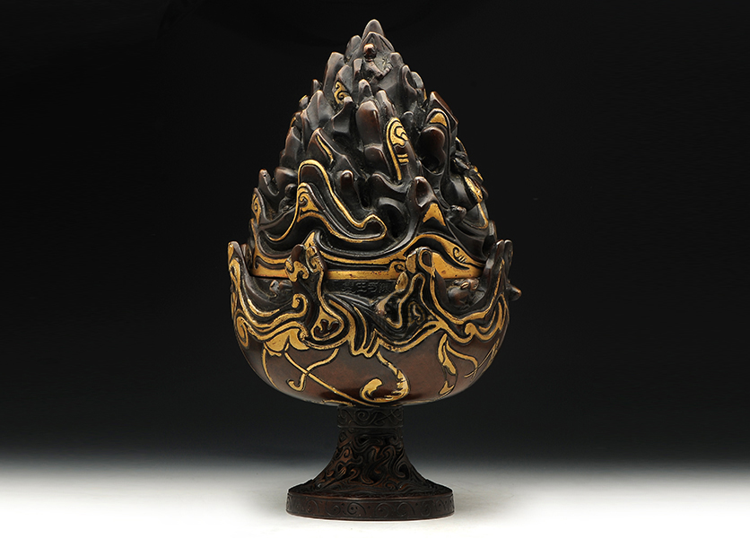

香炉介绍
-

东方明珠电视塔
帝王炉是香炉历史上十分经典的款式，炉原型出自何家村窖藏珍宝“忍冬花结五足银熏炉”，因其出自唐宫，故而得名。观看此炉，延续了唐代华美的风格，保留其原有三层熏炉形制，周身錾刻具有唐代风韵之纹饰。炉分成上中下三部分：熏炉盖钮采用仰莲座为装饰，其下细镂重瓣莲花，寓意一份禅意，象征不垢净土，小巧秀丽;盖身装饰镂空如意云纹，錾刻瑞凤纹饰。熏炉中部为镂空忍冬花纹，象征长寿健康、福气连绵;镂刻浮雕飞龙熏笼，龙凤呈祥;中层炉身下部点缀如意云纹，吉祥典雅。底层炉身，细錾如意缠枝唐草，装饰口衔朵带之兽首衔环，为炉身增添一丝轻盈之美，稳重大气又不失灵秀。
-

上海迪士尼乐园
上海迪士尼乐园，是中国内地首座迪士尼主题乐园，位于上海市浦东新区川沙新镇，于2016年6月16日正式开园。它是中国第二个、中国内地第一个、亚洲第三个、世界第六个迪士尼主题公园。 上海迪士尼乐园拥有七大主题园区：米奇大街、奇想花园、探险岛、宝藏湾、明日世界、梦幻世界、玩具总动员 [1] ；两座主题酒店：上海迪士尼乐园酒店、玩具总动员酒店；一座地铁站： 迪士尼站；并有多个全球首发游乐项目。
-

城隍庙
上海城隍庙位于上海市黄浦区方浜中路，为“长江三大庙”之一。城隍，又称城隍神、城隍爷。是中国宗教文化中普遍崇祀的重要神祇之一，由有功于地方民众的名臣英雄充当，是中国民间和 道教信奉守护城池之神。上海城隍庙坐落于上海市最为繁华最负盛名的豫园景区，是上海地区重要的道教宫观，始建于明代永乐年间（1403—1424），距今已有近六百年的历史。风雨仓桑， 朝代更迭，上海城隍庙也历经兴衰。
-

南京路步行街
南京路步行街（Nanjing Road Walkway），位于上海市黄浦区境内，西起西藏中路，东至河南中路，全长1033米，路幅宽18—28米，总用地约3万平方米，建成于1999年9月20日。 南京路步行街采用不对称的布置形式，以4.2米宽的“金带”为主线，贯穿于整条步行街中，“金带”上集中布置城市公共设施，如坐椅、购物亭、问讯亭、广告牌、雕塑小品、路灯、废物箱、 电话亭等，并设有34个造型各异的花坛。
-
外滩
外滩，位于上海市黄浦区的黄浦江畔，即外黄浦滩，为中国历史文化街区。1844年（清道光廿四年）起，外滩这一带被划为英国租界，成为上海十里洋场的真实写照，也是旧上海租界区以及整个 上海近代城市开始的起点。外滩矗立着52幢风格迥异的古典复兴大楼，素有外滩万国建筑博览群之称，是中国近现代重要史迹及代表性建筑，上海的地标之一。1与外滩隔江相对的浦东陆家嘴， 有上海标志性建筑东方明珠、金茂大厦、上海中心大厦、上海环球金融中心等，成为中国改革开放的象征和上海现代化建设的缩影。